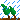
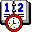

wheelhouse

Home
FAQ
Shipspotting
Links
Library
Diagrams

Notes
Mainpage
Changelog
2025/09/15: font and aesthetic changes
2025/08/06: layout size adjustmnents
2025/04/13: layout changes and old pages removed
2025/03/10: meterology 2 notes finished
2025/02/05: general ship knowledge 3 notes finished
2024/12/10: navigation safety notes finished
2024/11/21: communications notes finished
2024/11/03:notes split into individual pages
2024/10/17: small visual update and shipspotting page added.
2024/09/25: page has been totally remade.
harbour
office
chartroom
wheelhouse
photos
sketchbook
blog
guestbook